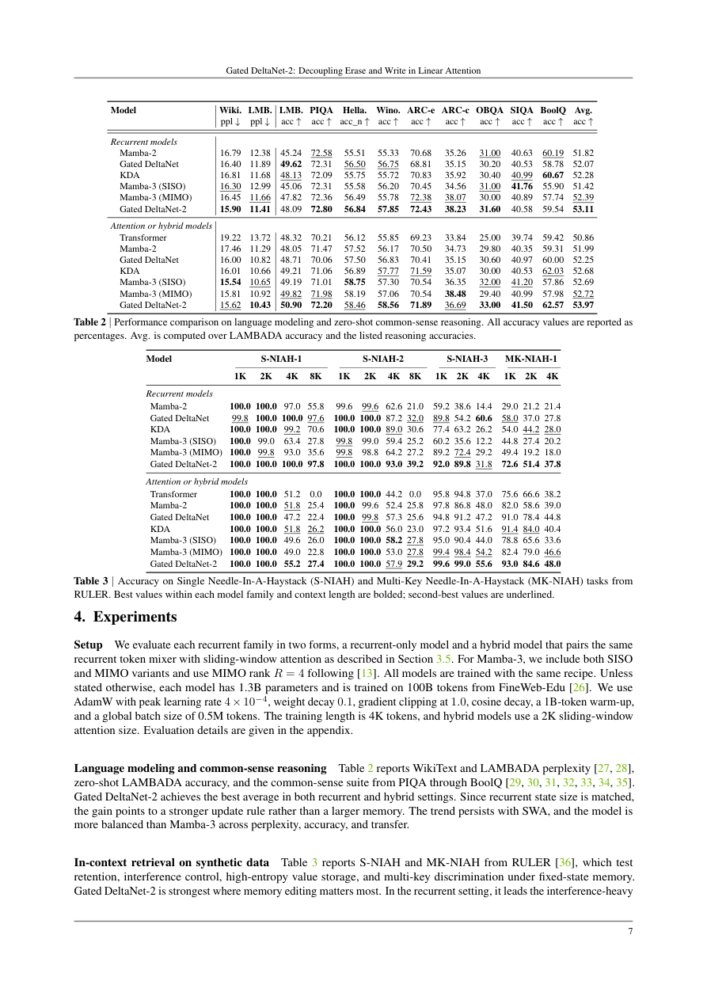

#1
★ 8/10
Gated DeltaNet-2: Decoupling Erase and Write in Linear Attention
Gated DeltaNet-2：在线性注意力中解耦擦除与写入

图 Figure · Page 7 of paper
🎯 线性注意力中解耦擦除与写入门控，提升压缩记忆编辑能力
Gated DeltaNet-2 decouples erase and write gates in linear attention for stronger memory editing.
| 维度 | 中文 | English |
|---|---|---|
| ❓ 待解决 的问题 |
线性注意力模型将上下文压缩为固定大小的循环状态，速度快且内存高效，但精确编辑这种压缩记忆很困难。之前的 delta-rule 模型（如 Gated DeltaNet 和 KDA）用单一标量门同时控制"擦除旧内容"和"写入新内容"两件事，把两个本质不同的操作绑定在一起，限制了记忆更新的表达能力。 | Linear attention models compress context into a fixed-size recurrent state, making them fast and memory-efficient — but editing that compressed memory precisely is hard. Prior delta-rule models like Gated DeltaNet and KDA use a single scalar gate to control both how much old content is erased and how much new content is written, which conflates two fundamentally different operations and limits expressive memory updates. |
| 💡 解决 的亮点 |
• 创新解耦：引入独立的逐通道擦除门 b_t 和写入门 w_t，取代先前方法中共享的单标量门控。 • 统一泛化：当两个门退化为同一标量时还原为 KDA，当衰减也退化时还原为 Gated DeltaNet，实现对已有方法的统一覆盖。 • 高效训练：推导了带逐通道衰减的分块 WY 算法，并设计了感知门控的反向传播，保持完全并行训练效率。 | • Novel decoupling: introduces separate channel-wise erase gate b_t and write gate w_t, replacing the single-scalar tie shared by prior methods. • Unified generalization: Gated DeltaNet-2 subsumes both Gated DeltaNet and KDA as special cases when gates collapse to scalars. • Efficient training: derives a chunkwise WY algorithm with channel-wise decay absorbed into asymmetric erase factors, plus a gate-aware backward pass for fully parallel training. |
| 🧪 实验 内容 |
在 FineWeb-Edu 数据集的 1000 亿 token 上训练 13 亿参数规模的模型。基线包括 Mamba-2、Gated DeltaNet、KDA 和 Mamba-3 的多个变体，分别在纯循环和混合架构设置下评估。评估任务涵盖语言建模（困惑度）、常识推理基准，以及使用 RULER 基准的长上下文检索任务（包括大海捞针和多键检索）。 | Models were trained at 1.3B parameters on 100B tokens from the FineWeb-Edu dataset. Baselines include Mamba-2, Gated DeltaNet, KDA, and Mamba-3 variants, evaluated in both recurrent-only and hybrid settings. Evaluations cover language modeling (perplexity), commonsense reasoning benchmarks, and long-context retrieval via the RULER benchmark, specifically the needle-in-a-haystack and multi-key retrieval tasks. |
| 📊 实验 结果 |
在 13 亿参数、1000 亿 token 训练规模下，Gated DeltaNet-2 在所有对比模型（Mamba-2、Gated DeltaNet、KDA、Mamba-3）中取得最强综合成绩。在 RULER 长上下文基准测试中，多键检索任务提升最为显著，在纯循环和混合架构两种设置下均超越全部基线。语言建模困惑度和常识推理任务相比前代方法 Gated DeltaNet 和 KDA 也持续提升。 | At 1.3B parameters / 100B tokens, Gated DeltaNet-2 achieves the strongest overall results among all compared models (Mamba-2, Gated DeltaNet, KDA, Mamba-3). On RULER long-context benchmarks, it shows the most pronounced gains specifically in the multi-key retrieval setting, outperforming all baselines in both recurrent and hybrid configurations. It consistently improves across language modeling perplexity and commonsense reasoning tasks compared to its predecessors Gated DeltaNet and KDA. |
| 🏁 结论 | Gated DeltaNet-2 证明了在线性注意力中通过独立的逐通道门解耦擦除与写入操作，是一种简单而有效的提升压缩记忆编辑能力的方式。该模型在 13 亿参数规模的亚二次方序列模型中树立了新的最优水平，尤其在长上下文检索任务上表现突出。 | Gated DeltaNet-2 proves that decoupling the erase and write operations in linear attention — via separate channel-wise gates — is a simple yet effective way to improve compressed memory editing. The model establishes a new state-of-the-art among sub-quadratic sequence models at the 1.3B scale, with especially strong long-context retrieval performance. |
| 🔗 论文 链接 |
arXiv: 2605.22791v1 · 📥 PDF | |
⚙️ Method · 方法详解
Gated DeltaNet-2 用两个独立的逐通道门替换了先前 delta-rule 模型中的单标量门：擦除门 b_t 控制键侧旧记忆的清除程度，写入门 w_t 控制值侧新内容的写入程度。这种解耦被整合进非对称的快速权重更新公式中。为支持高效训练，作者推导了将逐通道衰减吸收进擦除因子的分块 WY 表示，并设计了感知门控的反向传播以保持序列维度的并行性。该模型同时兼容纯循环和混合（循环+注意力）架构。
Gated DeltaNet-2 replaces the single scalar gate used in prior delta-rule models with two independent channel-wise gates: an erase gate b_t that controls how much of the old memory on the key side is removed, and a write gate w_t that controls how much new content is committed on the value side. This separation is absorbed into an asymmetric fast-weight update formulation. To support efficient training, the authors derive a chunkwise WY representation that incorporates channel-wise decay into the erase factors, and design a gate-aware backward pass that maintains parallelism across the sequence dimension. The model is compatible with both pure recurrent and hybrid (recurrent + attention) architectures.
📐 Key Formulas · 关键公式
\[\mathbf{S}_t = \mathbf{S}_{t-1} + \mathbf{w}_t \odot (\mathbf{v}_t - \mathbf{S}_{t-1}\mathbf{k}_t)^\top \mathbf{k}_t^\top - \mathbf{b}_t \odot \mathbf{S}_{t-1} \hat{\mathbf{k}}_t \hat{\mathbf{k}}_t^\top\]
💡 Gated Delta Rule-2 的状态更新公式：用写入门 w_t 控制新值的写入量，用擦除门 b_t 控制旧记忆的擦除量，两者独立作用于同一记忆状态 S_t。
The Gated Delta Rule-2 state update: write gate w_t independently controls how much new value is committed, while erase gate b_t independently controls how much old memory is removed — both operating channel-wise on the recurrent state S_t.
\[\text{KDA: } \mathbf{b}_t = \mathbf{w}_t = \beta_t \cdot \mathbf{1}, \quad \text{Gated DeltaNet: } \mathbf{b}_t = \mathbf{w}_t = \beta_t \cdot \mathbf{1},\ \lambda=1\]
💡 当擦除门和写入门退化为同一标量时，模型还原为 KDA；当衰减也退化（λ=1）时，还原为 Gated DeltaNet，展示了 Gated DeltaNet-2 对先前方法的统一覆盖关系。
When both gates collapse to the same scalar β_t, the model reduces to KDA; when channel-wise decay also collapses (λ=1), it reduces to Gated DeltaNet — showing Gated DeltaNet-2 as a strict generalization of both.
🌟 Why It Matters · 为什么重要
随着大语言模型处理越来越长的上下文，softmax 注意力的内存瓶颈推动了对高效线性替代方案的需求，Gated DeltaNet-2 通过更细粒度的解耦记忆控制推进了这一前沿。该工作同时为近期 delta-rule 架构提供了清晰的理论统一框架，为后续研究者提供了有原则可依的设计空间。
As LLMs scale to longer contexts, the memory bottleneck of softmax attention drives demand for efficient linear alternatives — Gated DeltaNet-2 advances this frontier by showing that fine-grained, decoupled memory control meaningfully improves both quality and retrieval. This work also provides a clean theoretical unification of recent delta-rule architectures, giving future researchers a principled design space to explore.